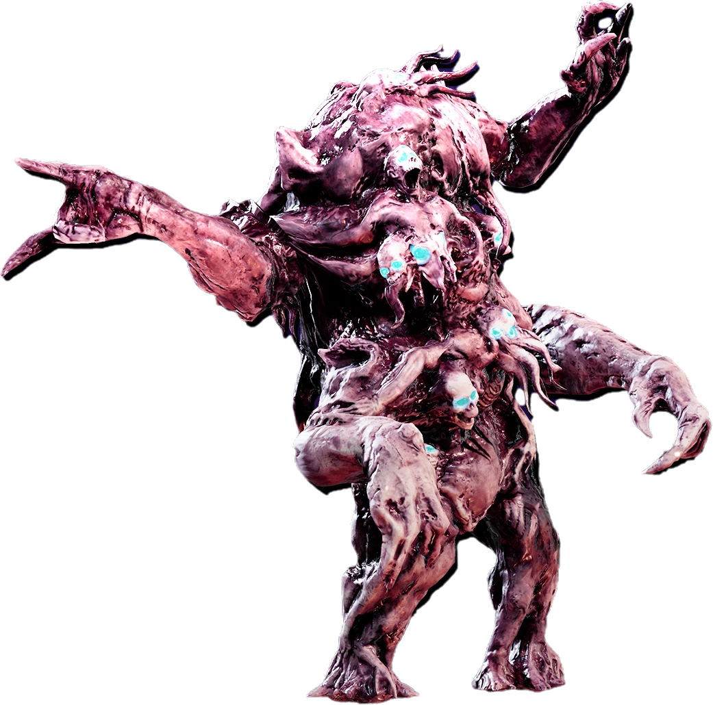
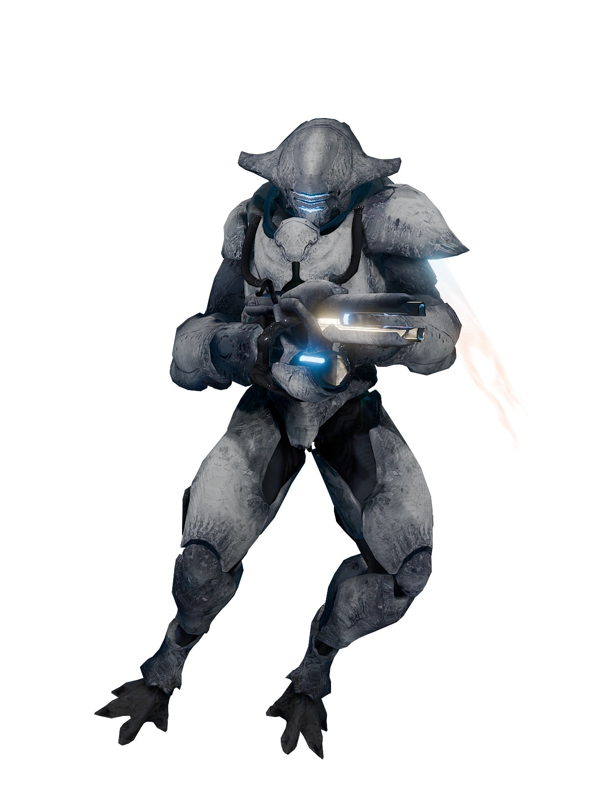
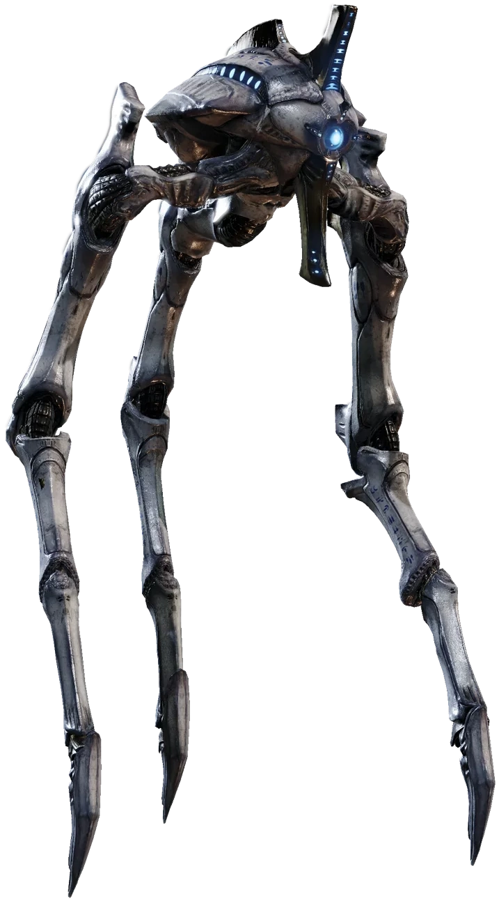

The Illuminate, a alien species of dissident scum. We defeated them in the first galactic war, and yet they came back for more, we must push them back yet agin.
For Super Earth, and Democracy
Strategy:
The Illuminate uses both a melee horde and ranged units, so having something such as the deadeye for large opponents and the crisper for the horde is advised. Aditionally, the "overseers" wear ablative armour, a type of armour which falls off when damaged so that it can better protect the one wearing it, this makes those units seem more tanky than usual.
Tough Enemies:
The Fleshmob

The Fleshmob is a amalgamation of our beautiful citizens. Its high mass causes it to have much health, however, it is unarmoured, this makes the flak rounds of an autocannon very effective against it.
The Elevated Overseer

The Elevated Overseer, the most mobile of the overseers, their speed and high damage makes them a formidable opponent, however, a single shot from the deadeye to the unarmoured head, or a few shots from the autocannon can solve this.
The Stingray

The Stingray, a extremely mobile bio-machine, it will periodically swoop down to bombard you, eventhough it is a machine, it only has medium armour, making it vaunerable to pretty much everything.
The Harvester

The Harvester, a giant tripod-like creature, in combat, it will shield itself and fire a deadly but slow moving, beam of energy. The spikes on the top and bottom of its "face" can be destroyed to prevent it from shielding and the beam "eye" has only medium armour, as do the joints.